Probability Theory on Finite Spaces
Despite its infamous reputation the foundations of probability theory are quite straightforward. Much of the mathematical difficulty arises only when we implement probability theory on elaborate spaces like the real numbers, and most of the philosophical difficultly arises only when trying to assign an interpretation to the mathematics. In this chapter I try to avoid this baggage by introducing the basics of abstract probability theory on the simplest, nontrivial space: a collection of a finite number of elements.
1 Finite Spaces
A finite space is a set containing a finite number of distinct elements, X = \{x_1, ..., x_N\}. The numerical index here allows us to differentiate the between the N individual elements but it does not necessarily imply that the elements have any natural ordering to them. For example the space X = \{x_1, x_2, x_3, x_4, x_5\} contains five, generally unordered elements (Figure 1). If the elements are endowed with a natural ordering, and the ordering is relevant, then we say that the space is an ordered space.
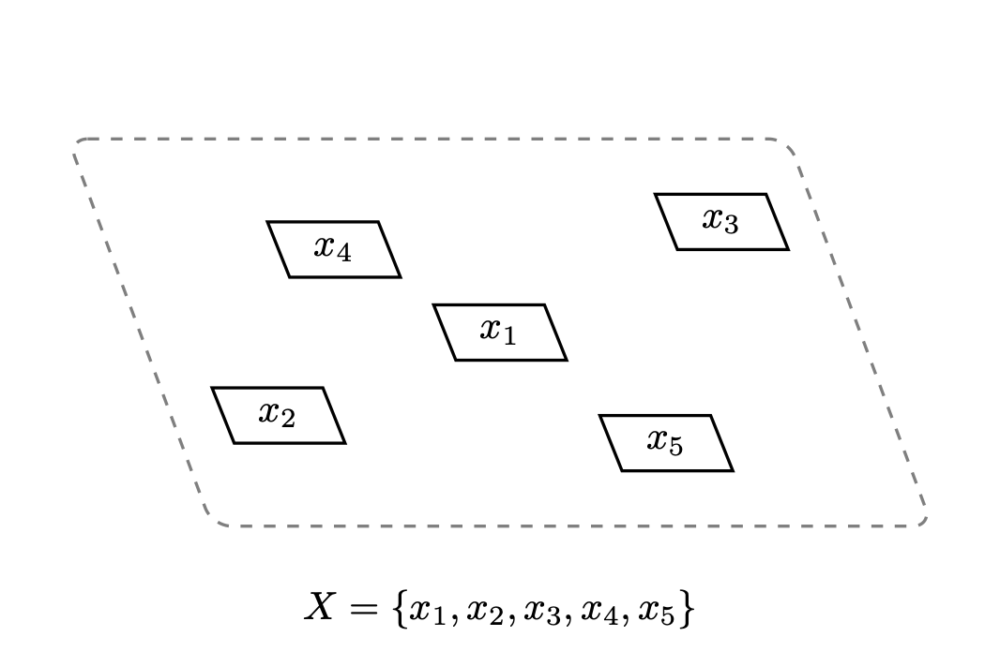
In practical applications of probability theory the abstract elements x_{n} will model meaningful objects, but in this chapter I will avoid any particular interpretation and instead focus on the mathematical concepts. That said when X is intended to capture all of the objects of interest in a given application I will refer to it as the ambient space.
Once we’ve defined an ambient space we have various ways of organizing its individual elements and manipulating those organizations.
1.1 Subsets
A subset of X is any collection of elements in X. For example \mathsf{x} = \{x_1, x_3, x_4\} is a subset of X = \{x_1, x_2, x_3, x_4, x_5\} (Figure 2). Importantly there is no notion of multiplicity in the concept of a subset, just membership: a subset can include an element x_{n} but it cannot include it multiple times.
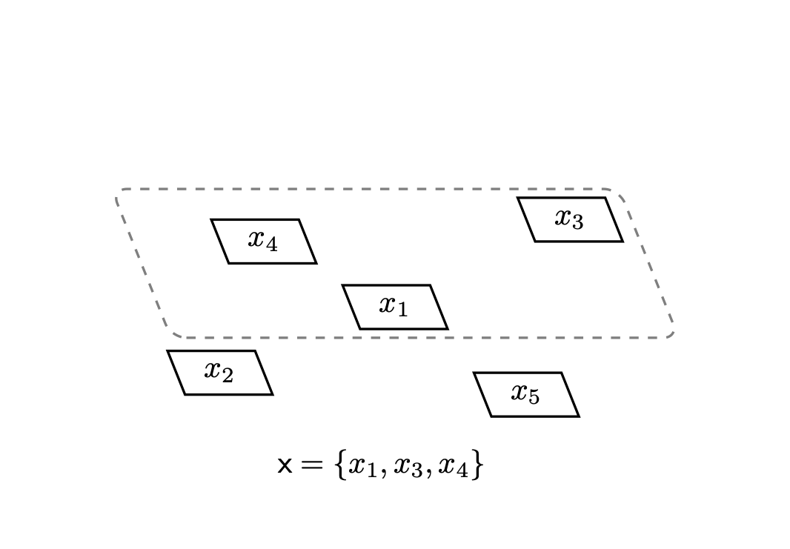
If \mathsf{x} is a subset of the ambient space X then we write \mathsf{x} \subset X. When \mathsf{x} might contain all of the elements of X, in which case \mathsf{x} = X, then we write \mathsf{x} \subseteq X.
Subsets are recursive objects. Selecting some elements from a subset yields a new subset. For example the collection \mathsf{x}' = \{x_3, x_4\} is both a subset of the previously introduced subset, \mathsf{x}' \subset \{x_1, x_3, x_4\} , and the full ambient space, \mathsf{x}' \subset X. More formally a subset \mathsf{x}' if a subset of another subset \mathsf{x} if all of the elements in \mathsf{x}' are also in \mathsf{x}.
Regardless of how many elements a finite space X contains three special subsets are always well-defined. The empty set \emptyset = \{\} contains no elements at all. On the other hand the entire space itself can be considered a subset containing all of the elements. A subset containing a single element is denoted \{ x_{n} \} and referred to as an atomic set.
There are {N \choose n} = \frac{ N! }{ n! (N - n)!} ways to select n elements from a finite space of N total elements, and hence {N \choose n} total subsets of size n. For example there is only one subset that contains no elements, {N \choose 0} = \frac{ N! }{ 0! (N - 0)!} = \frac{ N! }{ N! } = 1, which is just the empty set. Similarly there is only one subset that contains all of the elements, {N \choose N} = \frac{ N! }{ N! (N - N)!} = \frac{ N! }{ N! } = 1, which is just the full space itself. On the other hand there are {N \choose 1} = \frac{ N! }{ 1! (N - 1)!} = N distinct atomics sets that contain a single element, one for each element in X.
Counting all of the subsets of all possible sizes gives \sum_{n = 0}^{N} {N \choose n} = 2^{N} possible subsets that we can construct from a finite space with N elements. In other words the collection of all subsets is itself a finite space with 2^{N} elements. We refer to this set as the power set of X and denote it 2^{X}.
When the ambient space, and all hence all of the possible elements that any subset might contain, is fixed the prefix “sub” is sometimes dropped, with all subsets simply referred to as sets. For example collections of elements might be denoted “sets” when one takes the ambient space for granted and “subsets” when one wants to explicitly acknowledge the context of the ambient space, but the precise terminology can vary strongly from context to context.
1.2 Subset Operations
We can always construct subsets element by element, but we can also construct them by manipulating existing subsets.
For example given a subset \mathsf{x} \subset X we can construct its complement by collecting all of the elements in X that are not already in \mathsf{x}. The atomic set \mathsf{x} = \{ x_{3} \} contains the lone element x_3 and its complement contains the remaining elements (Figure 3) \mathsf{x}^{c} = \{ x_{1}, x_{2}, x_{4}, x_{5} \}. Moreover the complement of the empty set is the entire space, \emptyset^{c} = X, and the complement of the full space is the empty set, X^{c} = \emptyset.

More formally the construction of complementary subsets defines a unary function that takes in a subset as input and outputs the complementary subset, \begin{alignat*}{6} \cdot^c :\; & 2^X & &\rightarrow& \; & 2^X & \\ & \mathsf{x} & &\mapsto& & \mathsf{x}^{c} &. \end{alignat*} The top line of this notation denotes the input space and output space of the operation, here both the power set, while the bottom line denotes the action on a particular input, here a subset mapped into its complement. For example applying the complement operator to the subset \mathsf{x} = \{ x_{2}, x_{5} \} gives \mathsf{x}^{c} = \{ x_{2}, x_{5} \}^{c} = \{ x_{1}, x_{3}, x_{4} \}.
We can also construct subsets from multiple subsets. Consider, for example, two subsets \mathsf{x}_1 = \{ x_{1}, x_{4} \} and \mathsf{x}_2 = \{ x_{1}, x_{5} \} (Figure 4). The collection of all elements that are contained in either subset is itself a subset, as is the collection of all elements that are contained only in both subsets. These are referred to as the union, \mathsf{x}_1 \cap \mathsf{x}_2, and intersection, \mathsf{x}_1 \cup \mathsf{x}_2, respectively (Figure 5). For example \{ x_1, x_3, x_5 \} \cup \{ x_2, x_3 \} = \{ x_1, x_2, x_3, x_5 \} and \{ x_1, x_3, x_5 \} \cap \{ x_2, x_3 \} = \{ x_3 \}.
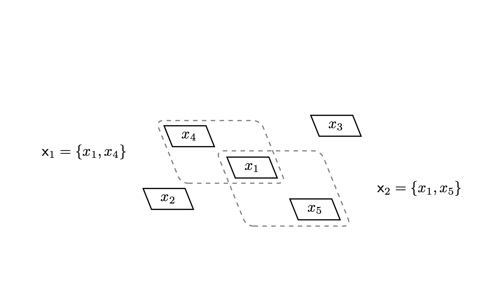
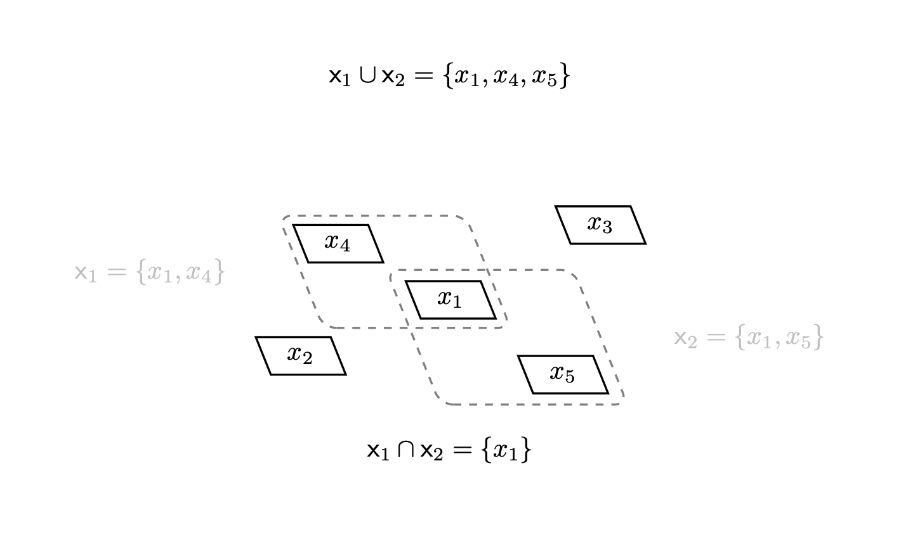
Two subsets are disjoint if they don’t share any elements; in this case their intersection is the empty set, \mathsf{x}_{1} \cap \mathsf{x}_{2} = \emptyset. The union and intersection of a subset with itself returns that subset, \mathsf{x} \cup \mathsf{x} = \mathsf{x} \cap \mathsf{x} = \mathsf{x}. Because the empty set does not contain any elements its union with any subset returns back that subset, \mathsf{x} \cup \emptyset = \emptyset \cup \mathsf{x} = \mathsf{x}, and its intersection with any subset returns the empty set, \mathsf{x} \cap \emptyset = \emptyset \cap \mathsf{x} = \emptyset. Similarly the union of any subset with the full space returns the full space, \mathsf{x} \cup X = X \cup \mathsf{x} = X, and the intersection of any subset with the full space returns back the subset, \mathsf{x} \cap X = X \cap \mathsf{x} = \mathsf{x}.
Because they require two inputs the union and intersection define binary functions that consume two input subsets and return a single output subset, \begin{alignat*}{6} \cdot \cup \cdot :\; & 2^{X} \times 2^{X}& &\rightarrow& \; & 2^{X} & \\ & \mathsf{x}_1, \mathsf{x}_{2} & &\mapsto& & \mathsf{x}_1 \cup \mathsf{x}_2 & \end{alignat*} and \begin{alignat*}{6} \cdot \cap \cdot :\; & 2^{X} \times 2^{X}& &\rightarrow& \; & 2^{X} & \\ & \mathsf{x}_1, \mathsf{x}_{2} & &\mapsto& & \mathsf{x}_1 \cap \mathsf{x}_2 &. \end{alignat*} Here 2^{X} \times 2^{X} denotes the space consisting of all pairs of subsets.
2 Measure and Probability Over Elements
Measure theory, and its special case of probability theory, is often burdened with intricate if not mysterious interpretations. From a mathematical perspective, however, measure theory simply concerns the consistent allocation of some abstract quantity across the ambient space.
Consider a reservoir of some real-valued, positive, and conserved quantity, M \in \mathbb{R}^{+} (Figure 6). Because M is conserved any amount m_{n} that is allocated to the element x_{n} \in X has to be depleted from the reservoir. That said in general the total content in the reservoir M can be infinite.
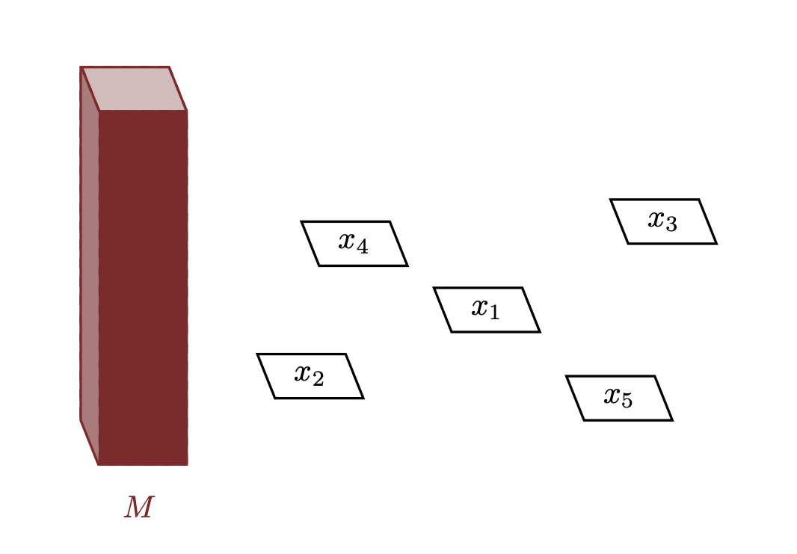
To make the mathematics as useful as possible we will avoid endowing M with any particular meaning for the time being. Instead interpretations will arise only when we apply measure theory to model particular systems.
An exhaustive allocation of M across the ambient spaces ensures that the reservoir is completely emptied. In another words all of M has to be allocated to the elements x_{n} \in X.
For example consider the ambient space X = \{x_1, x_2, x_3, x_4, x_5 \}. If we allocate m_{1} to x_{1} then that leaves M - m_{1} remaining to allocate to the other four elements (Figure 7 (a)). Allocating m_{2} to x_{2} depletes the reservoir a bit more (Figure 7 (b)). At the end we have to allocate all M - m_{1} - m_{2} - m_{3} - m_{4} that remains to x_{5} (Figure 7 (e)).
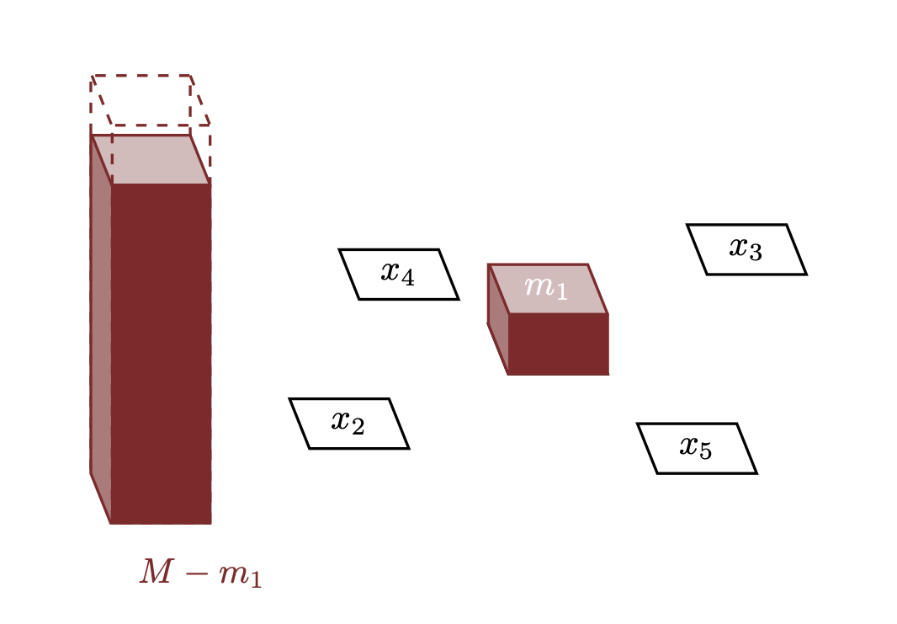
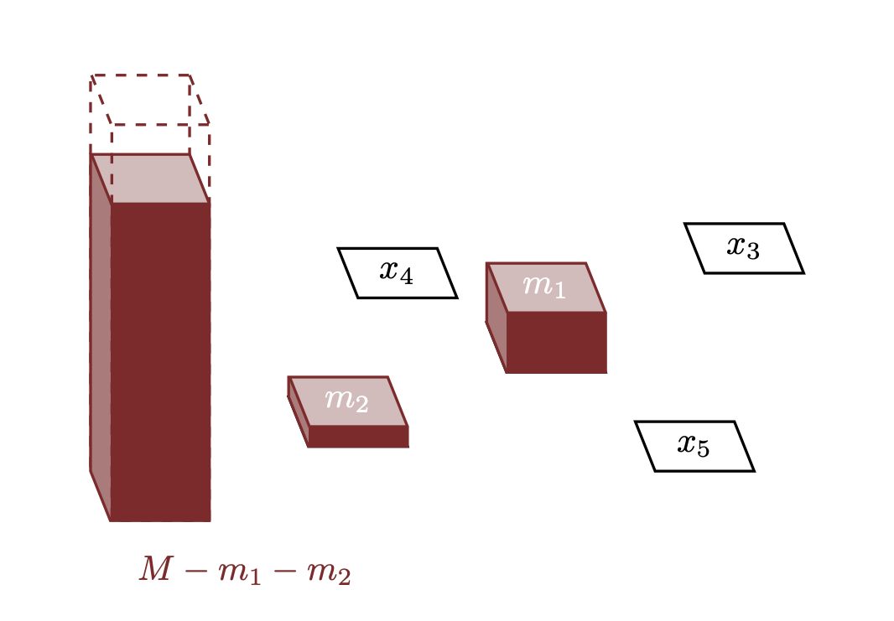
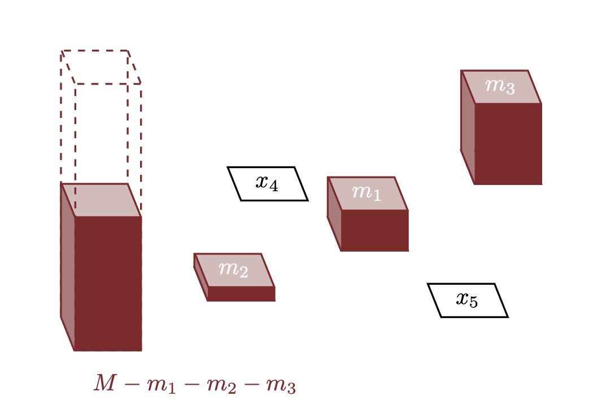
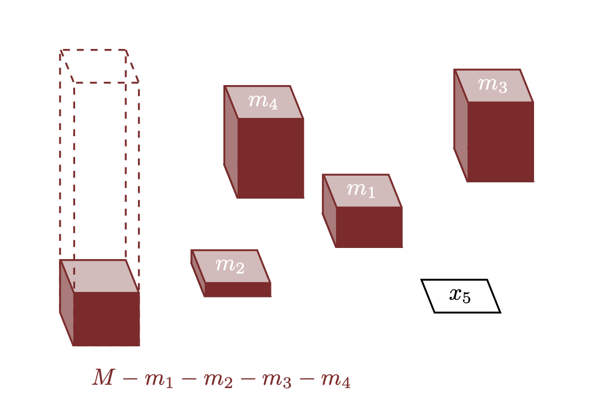
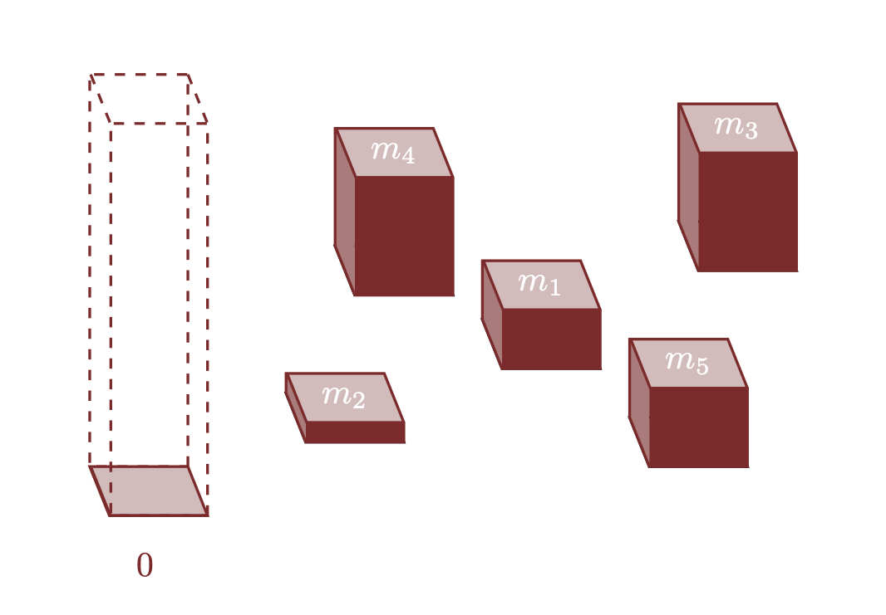
A measure is any consistent allocation of the quantity M to the elements of an ambient space. Mathematically any measure over a finite space can be characterized by N real numbers (Figure 8) \mu = \{ m_{1}, \ldots, m_{N} \} that satisfy 0 \le m_{n} and \sum_{n = 1}^{N} m_{n} = M. Recall that M can be infinite.
The larger m_{n} the more of M is allocated to the element x_{n}. Following this terminology we will also refer to M as the total measure and m_{n} as the measure allocated to x_{n}.
The allocation \{ x_{n}, m_{n} \} defined by a measure \mu can also be organized into a function that maps each element to its associated allocation, \begin{alignat*}{6} \mu :\; & X & &\rightarrow& \; & \mathbb{R}^{+} & \\ & x_{n} & &\mapsto& & m_{n} = \mu(x_{n}) &. \end{alignat*} A nice conceptual benefit of this function perspective is that instead of thinking about the global allocation m_1, \ldots, m_N all at once we can reason about only local allocations by evaluating \mu at a single input m_{n} = \mu(x_{n}) one at a time.
Now there are an infinite number of ways to allocate a total measure to the elements of a finite space, and hence an infinite number of measures. I will denote the space of all possible measures over X as \mathcal{M}(X).
Within this space there a few notable examples. For example a singular measure allocates the total measure M to a single element, leaving the rest with nothing (Figure 9 (a)). On the other hand a uniform measure allocates the same measure M / N to each element (Figure 9 (b)). On finite spaces there are N distinct singular measures, one for each distinct element, and a single unique uniform measure.
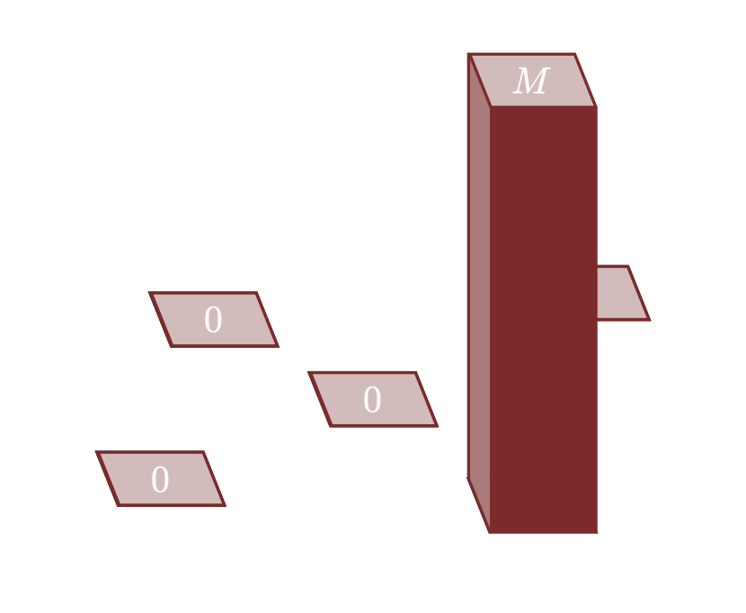

Perhaps the most important class of measures, however, are measures where the total measure is finite, M < \infty. Appropriately enough we refer to these measures as finite measures.
What makes finite measures so special is that we can always reframe the allocation they define into a relative one. Instead of considering the absolute measure allocated to each element m_{n} we can consider the proportion of the total measure allocated to each element, (Figure 10) p_{n} = m_{n} / M. By construction proportions are confined to the unit interval [0, 1]. As with any quantity taking values in [0, 1] we can represent proportions equally well with decimals, for example p_{n} = 0.2, and percentages, p_{n} = 20\%.

In other words a proportional measure defines the function (Figure 11) \begin{alignat*}{6} \pi :\; & X & &\rightarrow& \; & [0, 1] & \\ & x_{n} & &\mapsto& & p_{n} = \pi(x_{n}) & \end{alignat*} with 0 \le p_{n} \le 1 and \sum_{n = 1}^{N} p_{n} = 1. A collection of variables \{ p_{1}, \ldots, p_{N} \} satisfying these properties is also referred to as a simplex.
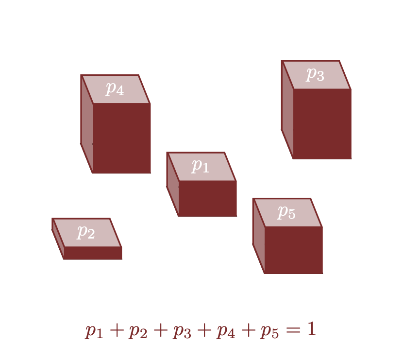
More importantly a proportional measure \pi is also known as a probability distribution with the proportional allocations p_{n} denoted probabilities. In other words while the term “probability” is often encumbered with all kinds of interpretational and philosophical baggage its mathematical structure is really quite straightforward. On a finite space a probability is just the proportion of some finite quantity that is allocated to an individual element.
The philosophical tension arises only when we try to assign some meaning to that quantity. This isn’t a question of mathematics but rather applying mathematics to model a system of interest. We’ll come back to the many different systems that can be consistently modeled with probability theory, and hence the interpretations of probability itself, in Chapter 4.
While we’re on the topic of terminological issues the word “distribution” is not without its own problems. In mathematics the term “distribution” is heavily overloaded and can be used to refer to a variety of related but distinct concepts. One way to avoid confusion is to always refer to proportional measures as “probability distributions” and never just “distributions” alone.
3 Measure and Probability Over Subsets
On finite spaces any allocation, absolute or proportional, over the individual elements x \in X also defines an allocation over entire subsets \mathsf{x} \in 2^{X}. The measure allocated to a subset is just the sum of the measures allocated to the elements in that subset. For example the measure allocated to \mathsf{x} = \{ x_{1}, x_{2}, x_{4} \} is m_{1} + m_{2} + m_{4} (Figure 12).
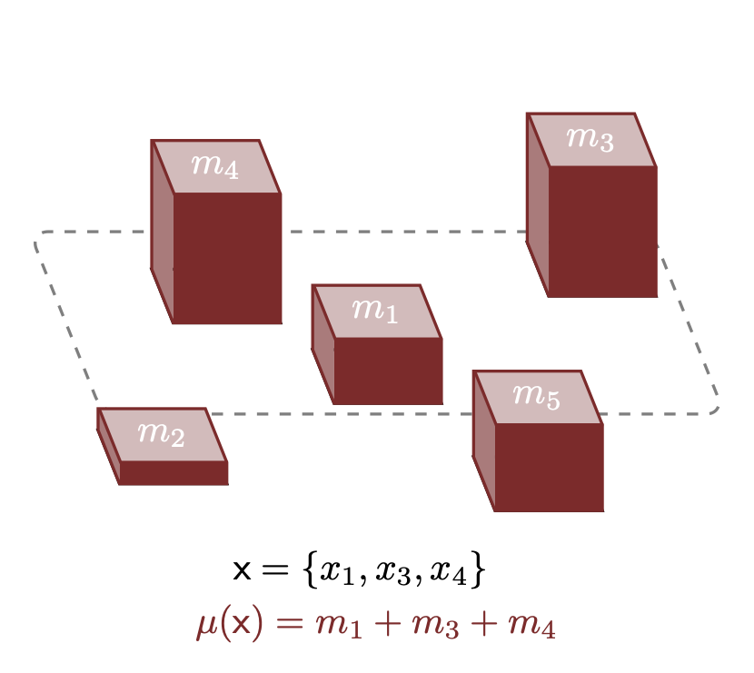
In other words a measure over individual elements \mu : X \rightarrow \mathbb{R}^{+} is equivalent to a measure over subsets \mu : 2^{X} \rightarrow \mathbb{R}^{+}. Similarly a probability distribution over individual elements \pi : X \rightarrow [0, 1] is equivalent to a probability distribution over subsets \pi : 2^{X} \rightarrow [0, 1]. Note that we have made the cardinal sin of overloading our notation so that \mu refers to both types of measures, and the only way to differentiate them is through their inputs; \mu(x) is the point-wise measure allocated to x \in X and \mu( \mathsf{x} ) is the subset-wise measure allocated to \mathsf{x} \in 2^X.
By construction any subset measure and probability distribution satisfy a wealth of useful properties. For example for any measure \mu( \emptyset ) = 0 and \mu( X ) = \sum_{n = 1}^{N} \mu(x_{n}) = M, while for any probability distribution we have \pi( \emptyset ) = 0 and \pi( X ) = 1.
Even better the subset allocations play well with the subset operations. Consider for example the two disjoint subsets \mathsf{x}_{1} = \{ x_{1}, x_{3} \} and \mathsf{x}_{2} = \{ x_{2}, x_{5} \}. Because the two subsets are disjoint their union combines all of their elements, \mathsf{x}_{1} \cup \mathsf{x}_{2} = \{ x_{1}, x_{2}, x_{3}, x_{5} \} and \begin{align*} \mu ( \mathsf{x}_{1} \cup \mathsf{x}_{2} ) &= \mu ( \{ x_{1}, x_{2}, x_{3}, x_{5} \} ) \\ &= m_{1} + m_{2} + m_{3} + m_{5} \\ &= ( m_{1} + m_{3} ) + ( m_{2} + m_{5} ) \\ &= \mu( \mathsf{x}_{1} ) + \mu( \mathsf{x}_{2} ). \end{align*}
More generally for any collection of subsets \mathsf{x}_{1}, \ldots, \mathsf{x}_{K} that are mutually disjoint, \mathsf{x}_{k} \cap \mathsf{x}_{k'} = \emptyset for k \ne k', we have \mu ( \cup_{k = 1}^{K} \mathsf{x}_{k} ) = \sum_{k = 1}^{K} \mu ( \mathsf{x}_{k} ). In other words if we can decompose a subset into a disjoint collection of smaller subsets then we can decompose the measure allocated to that initial subset into measures allocated to the component subsets. This consistency property is known as additivity.
A subset \mathsf{x} and its complement \mathsf{x}^{c} always disjoint, \mathsf{x} \cap \mathsf{x}^{c} = \emptyset. At the same time their union covers the entire space, \mathsf{x} \cup \mathsf{x}^{c} = X. Consequently additivity implies that \begin{align*} M &= \mu (X) \\ &= \mu ( \mathsf{x} \cup \mathsf{x}^{c} ) \\ &= \mu ( \mathsf{x} ) + \mu ( \mathsf{x}^{c} ), \end{align*} or \mu ( \mathsf{x}^{c} ) = M - \mu ( \mathsf{x} ). In words that the measure allocated to the complement of a subset is the total measure less the measure allocated to that subset. For probability distributions this becomes even cleaner, \pi ( \mathsf{x}^{c} ) = 1 - \pi ( \mathsf{x} ).
When two subsets overlap we have to take into consideration that the sum of their measures \mu ( \mathsf{x}_{1} ) + \mu ( \mathsf{x}_{2} ) double counts the allocations to any elements shared between them. For example if \mathsf{x}_{1} = \{ x_{1}, x_{4} \} and \mathsf{x}_{2} = \{ x_{1}, x_{5} \} then \begin{align*} \mu( \mathsf{x}_{1} \cup \mathsf{x}_{2} ) &= \mu( \{ x_{1}, x_{4}, x_{5} \} ) \\ &= m_{1} + m_{4} + m_{5}. \end{align*} but \begin{align*} \mu( \mathsf{x}_{1} ) + \mu ( \mathsf{x}_{2} ) &= (m_{1} + m_{4} ) + ( m_{1} + m_{5} ) \\ &= m_{1} + m_{1} + m_{4} + m_{5} \\ &= m_{1} + \mu( \mathsf{x}_{1} \cup \mathsf{x}_{2} ). \end{align*}
The elements that is double counted here, however, is just the lone element in the intersection of the two subsets. Consequently the excess measure allocated to the union is given by (Figure 13) m_{1} = \mu( \{ x_{1} \} ) = \mu( \mathsf{x}_{1} \cap \mathsf{x}_{2} ). and we can write \mu( \mathsf{x}_{1} ) + \mu ( \mathsf{x}_{2} ) = \mu( \mathsf{x}_{1} \cap \mathsf{x}_{2} ) + \mu( \mathsf{x}_{1} \cup \mathsf{x}_{2} ). This relationship is quite general and holds for any two subsets regardless of their overlap.
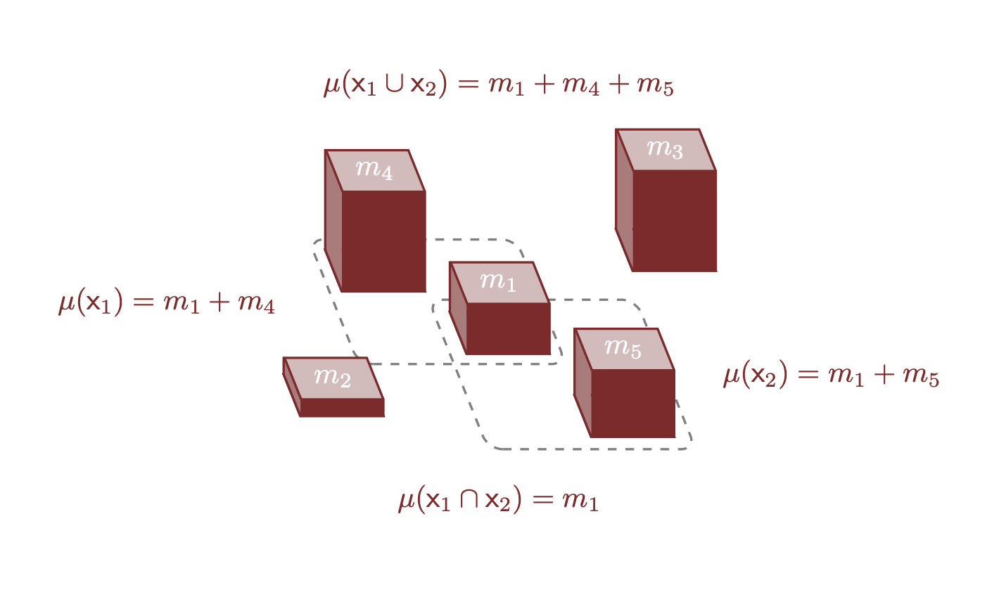
Because of these subset properties we can build up a given measure in many different ways, each of which can useful in different circumstances. This provides extremely convenient flexibility when trying to apply measure theory and probability theory in practice.
For example we can always specify a measure globally by specifying the individual allocations at the same time (Figure 14). Alternatively we can specify the allocation locally by considering each element one at a time (Figure 15). At each iteration we can take only from the measure allocated to the remaining elements, which corresponds to the “reservoir”.
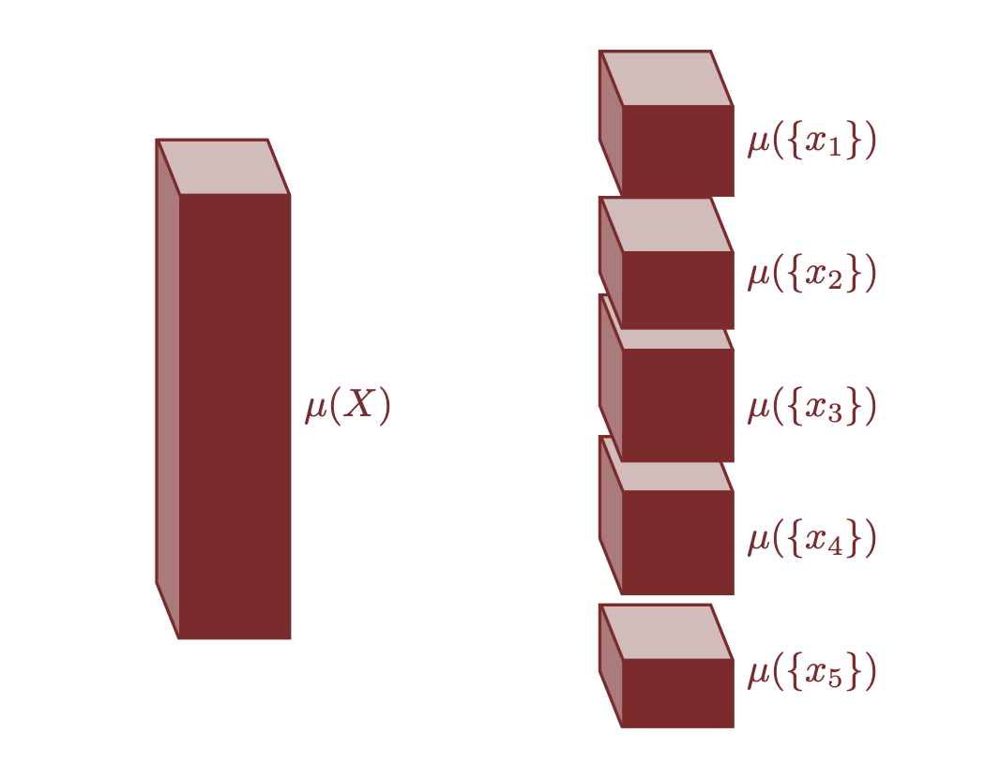
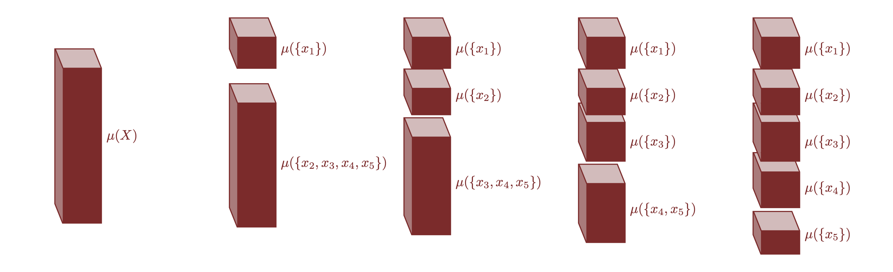
Critically we do not always need to start with individual allocations. Instead we can always start by allocating the total measure to disjoint subsets and then iteratively refining that allocation to smaller and smaller subsets until we reach the individual elements (Figure 16).
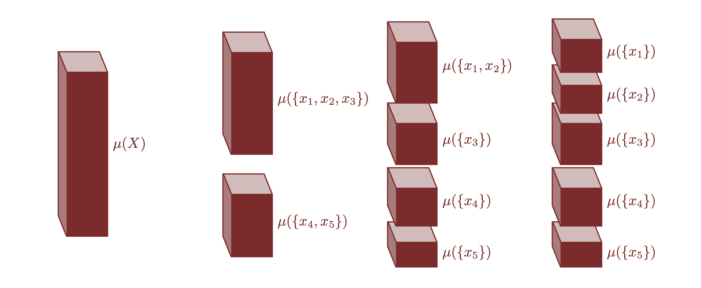
In addition to providing this construction flexibility the subset definition of a measure \mu : 2^{X} \rightarrow \mathbb{R}^{+} is also critical for generalizing measure theory beyond finite spaces. Specifically it becomes necessary when trying to consistently define measures on more mathematically complicated spaces like the real line. This will be the topic of Chapter 3.
4 Acknowledgements
A very special thanks to everyone supporting me on Patreon: Aapeli Nevala, Adam Bartonicek, Adam Fleischhacker, Adan, Adriano Yoshino, Alan Chang, Alessandro Varacca, Alexander Bartik, Alexander Noll, Alexander Rosteck, Anders Valind, Andrea Serafino, Andrew Mascioli, Andrew Rouillard, Andrew Vigotsky, Angie_Hyunji Moon, Ara Winter, asif zubair, Austin Rochford, Austin Rochford, Avraham Adler, Ben Matthews, Ben Swallow, Brynjolfur Gauti Jónsson, Cameron Smith, Canaan Breiss, Cat Shark, Charles Naylor, Chase Dwelle, Chris Zawora, Christopher Mehrvarzi, Chuck Carlson, Colin Carroll, Colin McAuliffe, Cruz, Damien Mannion, Damon Bayer, dan mackinlay, Dan Muck, Dan W Joyce, Dan Waxman, Dan Weitzenfeld, Daniel, Daniel Edward Marthaler, Daniel Rowe, Darshan Pandit, Darthmaluus , David Burdelski, David Galley, David Humeau, David Wurtz, dilsher singh dhillon, Doug Rivers, Dr. Jobo, Dr. Omri Har Shemesh, Ed Cashin, Ed Henry, Edgar Merkle, edith darin, Eric LaMotte, Erik Banek, Ero Carrera, Eugene O’Friel, Evan Cater, Fabio Pereira, Fabio Zottele, Felipe González, Fergus Chadwick, Finn Lindgren, Florian Wellmann, Francesco Corona, Geoff Rollins, George Ho, Granville Matheson, Greg Sutcliffe, Guido Biele, Hamed Bastan-Hagh, Haonan Zhu, Hector Munoz, Henri Wallen, Hugo Botha, Huib Meulenbelt, Håkan Johansson, Ian Costley, Ian Koller, idontgetoutmuch, Ignacio Vera, Ilaria Prosdocimi, Isaac S, Isaac Vock, J, J Michael Burgess, Jair Andrade, James Hodgson, James McInerney, James Wade, Janek Berger, Jason Martin, Jason Pekos, Jeff Burnett, Jeff Dotson, Jeff Helzner, Jeffrey Burnett, Jeffrey Erlich, Jesse Wolfhagen, Jessica Graves, Joe Wagner, John Flournoy, Jon , Jonathan H. Morgan, Jonathan St-onge, Jonathon Vallejo, Joran Jongerling, Joseph Despres, Josh Weinstock, Joshua Duncan, Joshua Griffith, Josué Mendoza, JU, Justin Bois, Karim Naguib, Karim Osman, Keith O’Rourke, Kejia Shi, Kevin Foley, Kristian Gårdhus Wichmann, Kádár András, lizzie , LOU ODETTE, Luiz Pessoa, Marc Dotson, Marc Trunjer Kusk Nielsen, Marcel Lüthi, Marek Kwiatkowski, Mark Donoghoe, Mark Worrall, Markus P., Martin Modrák, Matt Moores, Matthew, Matthew Kay, Matthieu LEROY, Maurits van der Meer, Merlin Noel Heidemanns, Michael Colaresi, Michael DeWitt, Michael Dillon, Michael Lerner, Mick Cooney, Márton Vaitkus, N Sanders, Name, Nathaniel Burbank, Nic Fishman, Nicholas Clark, Nicholas Cowie, Nick S, Nicolas Frisby, Octavio Medina, Ole Rogeberg, Oliver Crook, Olivier Ma, Pablo León Villagrá, Palwasha Khan, Patrick Kelley, Patrick Boehnke, Pau Pereira Batlle, Peter Smits, Pieter van den Berg , ptr, Putra Manggala, Ramiro Barrantes Reynolds, Ravin Kumar, Raúl Peralta Lozada, Riccardo Fusaroli, Richard Nerland, Robert Frost, Robert Goldman, Robert kohn, Robert Mitchell V, Robin Taylor, Rong Lu, Ross McCullough, Ryan Grossman, Rémi , S Hong, Sam Levy, Scott Block, Scott Brown, Sean Pinkney, Sean Wilson, Serena, Seth Axen, shira, Simon Duane, Simon Lilburn, Srivatsa Srinath, sssz, Stan_user, Stefan, Stephanie Fitzgerald, Stephen Lienhard, Steve Bertolani, Stone Chen, Sus, Susan Holmes, Svilup, Sören Berg, Tagir Akhmetshin, Tao Ye, Tate Tunstall, Tatsuo Okubo, Teresa Ortiz, Thiago de Paula Oliveira, Thomas Lees, Thomas Vladeck, Tiago Cabaço, Tim Radtke, Tom McEwen, Tomáš Frýda, Tony Wuersch, Virginia Fisher, Vitaly Druker, Vladimir Markov, Wil Yegelwel, Will Farr, Will Kurt, Will Tudor-Evans, woejozney, yolhaj , yureq , Zach A, Zad Rafi, and Zhengchen Cai.
License
The text and figures in this chapter are copyrighted by Michael Betancourt and licensed under the CC BY-NC 4.0 license:
https://creativecommons.org/licenses/by-nc/4.0/